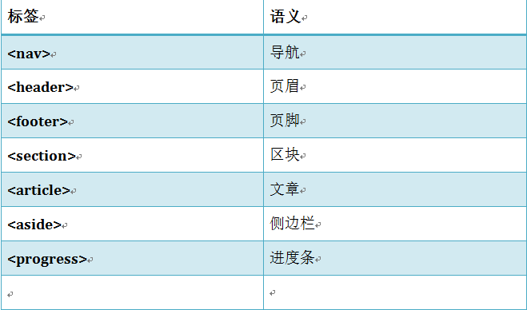
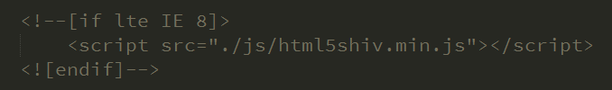

通俗的讲，HTML5就是一个对于HTML的版本号而已，没有什么神奇的。但是，他又不仅仅只是一个版本号，他更重要的作用是指定了一系列的Web开发的标准，成为第一个将Web做为应用开发平台的HTML语言。
1. 语义化更强--新的特殊内容元素，比如 article、footer、header、nav、section。
2. 新的表单控件，比如 calendar、date、time、email、url、search。
3. 用于媒介回放的 video 和 audio 元素。
4. 对本地离线存储的更好的支持。
5. 用于绘画的 canvas 元素。
通过HTML5中的新增标签来增强语义性

因为HTML5的新标签IE8及以下的浏览器不兼容，所以我们要解决兼容性问题

微数据
微数据是在如 span、div 的标签内添加属性，让机器（如搜索引擎）识别其含义，某些特定类型的信息。
ARIA
WAI-ARIA是指无障碍的网页应用。主要是应用于网页的辅助阅读设备，比如屏幕阅读器。
输入类型
表单元素
表单属性
音频
视频
获取元素
类名操作
自定义属性